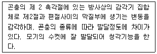
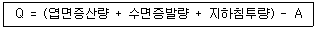
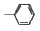

식물보호기사 (2014-03-02 기출문제)
1과목: 식물병리학
1. 과수 탄저병이나 사과 부란병 등은 병든 가지나 줄기에서 월동한 병원체가 다음해 전염원이 되는데, 이들 전염원을 제거하는 방제법은?
- 토양소독
- 기계적 방제
- 포장위생
- 윤작
(정답률: 66%)

2. 유사균류(Fungal-like Organisms)에 해당하는 것은?
- Chytridiomycota
- Zygomycota
- Myxomycota
- Ascomycota
(정답률: 56%)
3. 파이토플라스마(phytoplasma)의 특성으로 옳은 것은?
- 테트라사이클린(tetracycline)계 항생물질에 내성을 나타낸다.
- 부생체(saprophyte)이다.
- 세포벽이 없다.
- 세포는 막대모양(rod-shaped)이다.
(정답률: 77%)
4. 병든 식물체에 살포하거나 주입하면 병징이 감소하며, 때때로 바이러스 입자가 사라지는 경우도 있는 항바이러스성 물질로 알려진 것은?
- cycloheximide
- ribavirin
- tetracycline
- benomyl
(정답률: 51%)
5. 수목병의 전반에 관여하는 매개충인 마름무늬매미충에 의해 전반되지 않는 병명은?
- 느릅나무 시들음병
- 대추나무 빗자루병
- 뽕나무 오갈병
- 붉나무 빗자루병
(정답률: 74%)
6. 표징(sign)은 관찰되지만, 배양이 어려운 병원체에 의해 발생하는 병해로만 나열된 것은?
- 포도나무 피어스병, 포도나무 노균병
- 뽕나무 오갈병, 뽕나무 녹병
- 대추나무 빗자루병, 대추나무 역병
- 참외 흰가루병, 참외 노균병
(정답률: 62%)
7. 식물바이러스의 분류 기준이 되는 특성이 아닌 것은?
- 세포벽의 구조
- 핵산의 종류
- 매개체의 종류
- 입자의 형태적 특성
(정답률: 58%)
8. 아일랜다에 큰 기근으로 인하여 100만명을 굶어 죽게 하였던 식물병은?
- 밀 녹병
- 옥수수 깨씨무늬병
- 감자 바이러스병
- 감자 역병
(정답률: 88%)
9. 보리에 발생하는 병해 중 바이러스에 의한 것은?
- 흰가루병
- 줄무늬병
- 붉은곰팡이병
- 줄무늬모자이크병
(정답률: 80%)
10. 벼 도열병에 대한 설명으로 틀린 것은?
- 병원균의 학명은 Magnaporthe grisea 이다.
- 잎에 처음에는 암녹갈색 같은 작은 무늬가 생기고 나중에 장방추형이 된다.
- 병원균의 분생포자는 곤봉형이며 3개의 격막을 가지고 있다.
- 관개하거나 강수량이 많은 곳에서 재배하며, 다량의 질소비료를 사용하는 곳에서는 가장 중요한 병이다.
(정답률: 54%)
11. 병원균에 감염된 식물체가 이층(abscission)을 형성함으로써 감염부위를 건전부위와 격리시키는 병은?
- 옥수수 깜부기병
- 배추 무사마귀병
- 복숭아 세균성구멍병
- 사과나무 점무늬낙엽병
(정답률: 54%)
12. 벼 줄무늬잎마름병의 병원(病原)은?
- 바이러스
- 파이토플라스마
- 세균
- 진균
(정답률: 71%)
13. Ralstonia solanacerum 에 대한 대표적 병징은?
- 괴사(Necrosis)
- 감생(Hypoplasy)
- 시들음 증상(Wilting)
- 갈변 증상(Browning)
(정답률: 67%)
14. 채소류에 발생하는 잿빛곰팡이병에 대한 설명으로 틀린 것은?
- 딸기, 토마토, 고추 등에 많이 발생한다.
- 온도가 높고 습도가 낮을 때 많이 발생한다.
- 잎 보다는 꽃과 열매에 많이 발생한다.
- 병환부에 형성된 분생포자가 바람에 의해 전파된다.
(정답률: 83%)
15. mycotoxin에 해당하지 않는 것은?
- aflatoxin
- victorin
- zearalenone
- fumonisin
(정답률: 52%)
16. 사과나무에 발생하는 병 중 병든 부위로부터 알코올 냄새가 나는 특징으로 진단이 가능한 병은?
- 붉은별무늬병
- 탄저병
- 부란병
- 잿빛곰팡이병
(정답률: 86%)
17. 소나무 혹병이나 잣나무 털녹병의 수포자 형성을 억제하여 생물방제 이용 가능성이 있는 기생균은?
- Tubercullina maxima
- Trichoderma harzianum
- Peniophora gigantea
- streptomyces griseous
(정답률: 33%)
18. 병원체가 기주에 접촉하여 실제 감염으로 이어지는 것을 설명하는 용어는?
- 확대전반
- 풍매전반
- 유효전반
- 수동적 전반
(정답률: 65%)
19. 채소류의 무름병에 대한 설명으로 틀린 것은?
- 이 병에 걸린 조직은 처음에는 수침상을 나타낸다.
- 주로 물관부가 병원균에 침해된다.
- 유조직이 침해되어 무르게 된다.
- 병원균은 Erwinia 속에 속한다.
(정답률: 59%)
20. 식물병원균인 Fusarium 이 생산하는 진균독소가 아닌 것은?
- Zearalenone
- Tentoxin
- Trichothecene
- Fumonisin
(정답률: 45%)
2과목: 농림해충학
21. 곤충의 체색 중 흑색이나 갈색으로 표피 내, 진피세포 내 또는 혈액 속에 존재하는 색소화합물은?
- carotinoid
- pterin
- blue bile
- melanin
(정답률: 75%)
22. 가장 기본적인 발생예찰 방법은?
- 실험적 방법
- 통계적 방법
- 컴퓨터 이용 방법
- 야외조사 및 관찰 방법
(정답률: 82%)
23. 벼의 해충 중 흡즙에 의한 직접적인 피해 외에도 줄무늬잎마름병과 검은줄오갈병의 바이러스병을 매개하여 간접적인 피해를 주는 해충은?
- 이화명나방
- 혹명나방
- 벼멸구
- 애멸구
(정답률: 77%)
24. 곤충의 외부 기관 중 가슴(흉부)의 부속기관과 가장 거리가 먼 것은?
- 날개
- 생식기
- 기문
- 다리
(정답률: 77%)
25. 1세대를 경과하는데 가장 긴 시간을 필요료 하는 곤충은?
- 장수풍뎅이
- 뽕나무하늘소
- 말매미
- 소나무좀
(정답률: 79%)
26. 한여름 휴한기에 비닐하우스를 밀폐하면 토중 온도가 높아져서 땅속의 해충을 죽이는 방제법은?
- 생물적 방제법
- 물리적 방제법
- 화학적 방제법
- 법적 방제법
(정답률: 84%)
27. 귀뚜라미의 청각기관이 위치하는 곳은?
- 가슴
- 앞다리
- 뒷다리
- 가운데다리
(정답률: 72%)
28. 곤충의 성페로몬의 특징이 아닌 것은?
- 작물, 인간, 천적, 환경에 무해하다.
- 성페로몬 성분의 배합에 의한 반응 차이는 없다.
- 대상 곤충에만 선택적으로 작용한다.
- 저항성이 없다.
(정답률: 75%)
29. 곤충의 특징을 바르게 설명한 것은?
- 몸은 머리가슴ㆍ배의 2부분으로 구분되고 다리는 4쌍이며 7마디로 구성되어 있다.
- 몸은 머리ㆍ가슴ㆍ배의 3부분으로 구분되고 다리는 4쌍이며 7마디로 구성되어 있다.
- 몸은 머리가슴ㆍ배의 2부분으로 구분되고 다리는 3쌍이며 5마디로 구성되어 있다.
- 몸은 머리ㆍ가슴ㆍ배의 3부분으로 구분되고 다리는 3쌍이며 5마디로 구성되어 있다.
(정답률: 83%)
30. 쥐똥밀깍지벌레의 암컷 성충의 형태는?
- 깍지는 1.0mm 정도이며 원형으로 황갈색 또는 적갈색이다.
- 깍지는 2.0~2.5mm 이며 원추형으로 자갈색이다.
- 성충은 3.0~4.0mm이며 타원형이고 몸에 흰가루로 두껍게 덮여있다.
- 깍지는 3.0~308mm로서 원형이며 백색 내지 회백색이다.
(정답률: 60%)
31. 해충 방제방법 중 생물적 방제의 장점에 해당하는 것은?
- 화학합성농약과 사용시 많은 주의가 요구된다.
- 환경의 영향을 많이 받는다.
- 효과가 더디게 나타난다.
- 안전한 농산물 생산이 가능하다.
(정답률: 82%)
32. 참나무류에 치명적인 피해를 주는 참나무 시들음병을 매개하는 곤충은?
- 북방수염하늘소
- 솔수염하늘소
- 광릉긴나무좀
- 털두꺼비하늘소
(정답률: 78%)
33. 기주와 해충간의 연결로 틀린 것은?
- 소나무 - 솔잎혹파리
- 참나무 - 광릉긴나무좀
- 벚나무 - 미국흰불나방
- 은행나무 – 천막벌레나방
(정답률: 58%)
34. 잠자리 유충의 호흡방식은?
- 주기적으로 수면으로 부상하여 호흡한다.
- 공기주머니를 통한 수중 호흡방식이다.
- 기관아가미를 통한 수중 호흡방식이다.
- 몸 표면 전체의 얇은 막을 통한 가스 교환방식이다.
(정답률: 68%)
35. 다음은 무엇을 설명하는 것인가?

- Johnston’s organ
- Tympanal organ
- Chordotonal organ
- Ommatidium
(정답률: 85%)
36. 담배나방에 대한 설명으로 틀린 것은?
- 고추의 주요 해충 중 하나이다.
- 땅속에서 번데기로 월동한다.
- 1년에 1회 발생한다.
- 담배에 피해를 준다.
(정답률: 58%)
37. 우리나라에서 월동하지 못하고 매년 외국에서 날아와 피해를 추는 해충은?
- 이화명나방
- 벼메뚜기
- 벼방나방
- 멸강나방
(정답률: 66%)
38. 기생성 천적곤충으로 이용가치가 높은 곤충목은?
- 벌목
- 매미목
- 나비목
- 사마귀목
(정답률: 76%)
39. 곤충의 휴면에 대해 설명으로 틀린 것은?
- 곤충의 휴면은 생활하기에 불리한 환경조건하에서 일어난다.
- 휴면이 일어나는 충태는 종에 따라 다르다.
- 곤충의 휴면은 저온 조건하에서만 일어난다.
- 곤충의 종에 따라서 일장조건이 휴면에 관여하기도 한다.
(정답률: 81%)
40. 약충과 성충이 벼포기의 하단부를 흡즙하여 벼에 피해를 주는 것은?
- 벼멸구
- 벼잎벌레
- 벼메뚜기
- 멸강나방
(정답률: 65%)
3과목: 재배학원론
41. 벼가 담수재배에 적응하고 침수 저항성이 큰 이유는?
- 기원지가 습지이다.
- 통기계(Air Passage System)가 있다.
- 지상부에 비해 뿌리의 건물중이 무겁다.
- 요수량이 적다.
(정답률: 68%)
42. 우리나라 논토양의 적정 유기물 함량(g/kg)은?
- 5~10
- 25~30
- 40~50
- 45~60
(정답률: 68%)
43. 탈질현상을 경감시키는데 가장 효과적인 시비법은?
- 질산태질소 비료를 논의 산화층에 시비
- 질산태질소 비료를 논의 환원층에 시비
- 암모늄태질소 비료를 논의 산화층에 시비
- 암모늄태질소 비료를 논의 환원층에 시비
(정답률: 54%)
44. 완전히 자가수정을 하는 동형접합체의 1개체로부터 불어난 자손의 총칭은?
- 계통
- 순계
- 종
- 품종
(정답률: 71%)
45. 동사온도(凍死溫度)가 가장 낮은 것은?
- 수목의 휴면아
- 겨울철의 보리
- 겨울철의 유채
- 포도의 맹아기
(정답률: 66%)
46. 비닐하우스에서는 흔히 고온장해가 유발되는데 내열성이 가장 큰 식물체 부위는?
- 눈(芽)
- 미성엽(未成葉)
- 완성엽(完成葉)
- 중심주(中心柱)
(정답률: 59%)
47. 옥신 중에서 식물체에서 합성되지 않는 것은?
- IAA
- IAN
- NAA
- PAA
(정답률: 63%)
48. 화곡류 작물에 흡수되어 표피조직을 강하게 하여 병충해 저항을 크게 하는 것은?
- 칼슘(Ca)
- 칼륨(K)
- 철(Fe)
- 규소(Si)
(정답률: 72%)
49. 다음 중 광포화점이 가장 낮은 작물은?
- 옥수수
- 밀
- 벼
- 콩
(정답률: 50%)
50. 동상해 응급대책으로 물이 얼 때 잠열(숨은열)이 발생되는 점을 이용하여 작물체 표면에 물을 뿌려 주는 방법은?
- 발연법
- 연소법
- 송풍법
- 살수빙결법
(정답률: 83%)
51. 토양이나 수질 오염을 통하여 인체에 중금속 중독을 초래하기 쉬운 것은?
- 카드뮴
- 구리
- 망간
- 몰리브덴
(정답률: 77%)
52. 답압(踏壓)의 효과가 아닌 것은?
- 도복 방지
- 건조해 경감
- 영양생장 촉진
- 서릿발에 의한 동사 방지
(정답률: 69%)
53. 윤작(輪作)의 원리로 틀린 것은?
- 주작물(主作物)은 지역사정에 따라서 다양하게 변화할 수 있다.
- 식량작물(食糧作物)이나 사료작물(飼料作物)의 어느 한 쪽에 치중하여 생산한다.
- 지력유지를 위하여 콩과작물을 포함시킨다.
- 잡초의 경감을 위해서 중경작물(中耕作物)이나 피복작물(被服作物)을 포함시킨다.
(정답률: 77%)
54. 식물의 거대형(giant form)은 어떤 경우에 생기는가?
- 장일성 식물을 단일하에 놓아둘 때
- 장일성 식물을 장일하에 놓아둘 때
- 단일성 식물을 단일하에 놓아둘 때
- 단일성 식물을 장일하에 놓아둘 때
(정답률: 65%)
55. 단명종자인 작물은?
- 배추
- 완두
- 메밀
- 클로버
(정답률: 52%)
56. 벼의 수해(水害)에 대한 설명으로 틀린 것은?
- 분얼초기에는 침수가 약하다.
- 수온이 높으면 침수 피해가 크다.
- 수잉기부터 출수개화기사이에는 침수에 극히 약하다.
- 침수로 표토가 씻겨내렸을 때에는 새 뿌리의 발생 후에 추비를 준다.
(정답률: 54%)
57. 밭에서의 가뭄 대책이 아닌 것은?
- 뿌림골을 낮게 한다.
- 뿌림골을 넓히거나 재식밀도를 촘촘하게 한다.
- 봄철 보리밭을 밟아 준다.
- 가뭄에 견디는 작물과 품종을 선택한다.
(정답률: 71%)
58. 작물이나 과수에서 순지르기의 효과로 가장 거리가 먼 것은?
- 생장을 억제시킨다.
- 측지(側枝)의 발생을 많게 한다.
- 개화나 착과(着果)수를 적게 한다.
- 목화나 두류에서도 효과가 크다.
(정답률: 53%)
59. 다음 논의 용수량(Q) 계산수식에서 A에 해당되는 것은?

- 강수량
- 강우량
- 유효우량
- 흡수량
(정답률: 64%)
60. 토양의 pH가 낮아질 때 가급도가 가장 감소되기 쉬운 영양분은?
- Fe
- P
- Mn
- B
(정답률: 57%)
4과목: 농약학
61. 다음 제제 중 농약의 살포 시 비산(飛散)이 가장 적은 것은?
- 분제
- 수화제
- 유제
- 입제
(정답률: 52%)
62. 수화제의 특징에 대한 설명으로 틀린 것은?
- 원료면에서 경제적이다.
- 제제가 고체이기 때문에 뒤처리가 용이하다.
- 액상제제 보다 희석농도가 적다.
- 유제보다 안전성이 떨어지므로 조제 후 신속히 사용하여야 한다.
(정답률: 51%)
63. 다음 중 친수기(親水基)가 아닌 것은?
- -SO3H
- -COONa
- -CN

(정답률: 58%)
64. 황산아트로핀은 어느 농약에 중독 치료에 사용하는가?
- 유기인계 살충제
- 디티오카바메이트계 살균제
- 유기염소계 살충제
- 유기비소계 살균제
(정답률: 51%)
65. 기계유 유제에 대한 설명으로 옳지 않은 것은?
- 무기합성 살충제이다.
- 값이 싸고 독성이 거의 없다.
- 95% 이상의 고농도 제품이 나오고 있다.
- 직접 접촉제로 작용한다.
(정답률: 51%)
66. 살충제를 작용기구에 따라 분류하였을 때 다음 중 가장 거리가 먼 것은?
- 생장조절제
- 신경전달 저해제
- 에너지생성 저해제
- 접촉제
(정답률: 60%)
67. 다음 중 잔류독성의 문제를 일으킬 위험요인이 가장 큰 계통의 농약은?
- 유기황계
- 유기인계
- 유기염소계
- 카바메이트계
(정답률: 62%)
68. 농약은 종류별로 병뚜껑의 색깔을 달리하여 농민이 농약을 쉽게 식별할 수 있도록 하고 있는데 살균제의 병뚜껑은 다음 중 어떤 색깔인가?
- 분홍색
- 초록색
- 노란색
- 파랑색
(정답률: 77%)
69. 살충제 파라티온(Parathion)의 성상 및 특성에 대한 설명으로 옳지 않는 것은?
- 해충 방제효과는 좋으나 인축에는 독성이 강하여 제한을 받는다.
- 대부분의 유기용매에 불용이며 알칼리에는 안정하다.
- 비침투성 약제이다.
- 접촉독, 가스독 및 소화중독의 세 가지 작용을 함께 가지고 있다.
(정답률: 57%)
70. 농약사용법에 의한 약해가 아닌 것은?
- 섞어 쓰기 때문에 일어나는 약해
- 동시 사용으로 인한 약해
- 불순물 혼합에 의한 약해
- 근접살포에 의한 약해
(정답률: 67%)
71. 45% 유제를 600배로 희석하여 10a 당 120L를 살포하여 해충을 방제하려고 할 때 유제의 소요량은?
- 100mL
- 200mL
- 300mL
- 400mL
(정답률: 70%)
72. 50%의 페노뷰카브 유제(비중:1) 100mL를 0.⑤% 액으로 희석하는데 소요되는 물의 양은 약 몇 L 인가?
- 49.95 L
- 99.9 L
- 499.5 L
- 999.9 L
(정답률: 66%)
73. 다음 중 과수의 탄저병에 적용하는 약제는?
- 이프로벤포스유제
- 프로베나졸입제
- 다조멧입제
- 베노밀수화제
(정답률: 56%)
74. 다음 중 농약의 증량제로 보기 어려운 것은?
- 벤토나이트(bentonite)
- 제올라이트(zeoilte)
- 활석(talc)
- 덱스트린(dextrin)
(정답률: 68%)
75. MAFA제(Neoasozin)은 어느 계통의 농약에 속하는가?
- 유기비소제
- 유기인제
- 유기주석제
- 유기염소제
(정답률: 51%)
76. 농약의 독성 표시로 사용되는 LD50의 단위는?
- g/kg
- μg/kg
- mg/m3
- mg/kg
(정답률: 72%)
77. 농약의 사용목적에 따른 분류에 해당하는 것은?
- 유기인계
- 호흡저해제
- 살응애제
- 과립수화제
(정답률: 62%)
78. 침투성 살충제의 작용특성에 대한 설명으로 가장 옳은 것은?
- 우수한 살충효과를 얻기 위해서는 작물체 표면에 균일하게 살포되어야 한다.
- 작물체의 즙액을 빨아먹는 흡즙해충에 특히 우수한 살충력을 나타낸다.
- 주로 섭식성 해충의 피부에 접촉, 흡수되어 살충력을 나타낸다.
- 살포 즉시 강력한 살충력을 나타내며 잔효성이 매우 짧은 편이다.
(정답률: 67%)
79. 파라티온은 인체의 조직과 혈액 중의 콜린에스테라제와 결합해서 어느 것이 축적되어 중독 증상을 일으키는가?
- 콜린(Choline)
- 초산(Acetic acid)
- 아세틸콜린(Acetyl Choline)
- 인산(Phosphor acid)
(정답률: 77%)
80. 다음 농약의 약해증상 중 만성적 약해에 해당하는 것은?
- 얼룩반점
- 착색불량
- 개화지연
- 발근저해
(정답률: 48%)
5과목: 잡초방제학
81. 벼와 광경합이 가장 크게 일어나는 잡초는?
- 강피
- 쇠털골
- 논둑외풀
- 올미
(정답률: 78%)
82. 종자 자체의 조성이나 구조에 기인하여 발아하지 못하는 경우의 휴면을 무엇이라 하는가?
- 강제휴면
- 타발휴면
- 2차휴면
- 생득휴면
(정답률: 55%)
83. 잡초의 이용면을 잘못 연결한 것은?
- 부레옥잠 – 수질 정화용
- 피 – 가축 사료용
- 어저귀 – 가축 사료용
- 별꽃 – 민간 한방용
(정답률: 69%)
84. 화학적 잡초 방제법의 장점은?
- 환경에 잔류 가능성이 없음
- 약해가 없음
- 살초작용이 빠름
- 생물에 안전함
(정답률: 82%)
85. 주성분 함량이 2.5%인 입제를 주성분 1kg/ha 수준으로 1ha에 처리할 경우 필요한 제품량은?
- 10kg
- 20kg
- 30kg
- 40kg
(정답률: 56%)
86. 논에 발생하는 다년생 사초과 잡초가 아닌 것은?
- 올방개
- 미나리
- 쇠털골
- 너도방동사니
(정답률: 62%)
87. 영양번식 기관에 의하여 주로 번식하는 잡초의 종류로 나열된 것은?
- 가래, 벗풀, 여뀌
- 강아지풀, 여뀌, 물옥잠
- 피, 물달개비, 마디꽃
- 올미, 가래, 너도방동사니
(정답률: 65%)
88. 다음 다년생 논잡초 중 영양번식 기관의 발생분포 심도가 표토로부터 가장 깊은 종은?
- 올미
- 너도방동사니
- 벗풀
- 올방개
(정답률: 51%)
89. 열처리나 침수처리 등의 잡초방제방법은 무슨 방제법이라고 하는가?
- 물리적 방제법
- 예방적 방제법
- 생태적 방제법
- 경종적 방제법
(정답률: 77%)
90. 종자에 낙하산모양의 깃털이나 솜털이 부착되어 있어서 바람에 의하여 전파가 되는 잡초로 나열된 것은?
- 명아주, 방동사니
- 민들레, 망초
- 어저귀, 쇠비름
- 박주가리, 환삼덩굴
(정답률: 78%)
91. 잡초군락을 평가하는 기준이 아닌 것은?
- 생장곡선
- 중요값
- 우점도지수
- 유사성계수
(정답률: 57%)
92. 잡초 분류방법 중 식물분류학적 분류에 해당하는 것은?
- 수생잡초
- 일년생잡초
- 종자번식잡초
- 화본과잡초
(정답률: 76%)
93. 광엽잡초에 대한 설명으로 옳은 것은?
- 잎이 가늘고 줄기가 삼각기둥 모양으로 생장하는 것이 특징이다.
- 잎이 가늘고 잎맥이 평행한 것이 특징이다.
- 잎이 넓고 크며 잎맥이 그물처럼 된 것이 특징이다.
- 생장점이 지하부에 있는 잡초를 의미한다.
(정답률: 68%)
94. 영양번식 기관과 이에 해당하느 잡초종이 옳게 짝지어진 것은?
- 인경 - 올미
- 구경 - 가래
- 지하경 - 띠
- 포복경 – 올방개
(정답률: 48%)
95. 생물적 잡초방제법의 장점은?
- 살초작용이 빠르다.
- 일정한 지역에 처리가 가능하다.
- 환경에 잔류문제가 없다.
- 동시에 여러 초종의 방제가 불가능하다.
(정답률: 82%)
96. 작물과 잡초 양분 경합에 있어서 경합이 가장 큰 것은?
- 칼륨(K)
- 인산(P)
- 칼슘(Ca)
- 질소(N)
(정답률: 76%)
97. 다음 용어 설명으로 틀린 것은?
- 경제적 허용한계밀도 – 방제노력과 방제로 인한 이득이 상충되는 수준까지 잡초를 허용할 수 있는 밀도
- 제초제 저항성 잡초 – 본래 제초제에 의해 잘 방제되었던 잡초가 제초제를 처리해도 잘 죽지 않는 생태형 변화된 잡초
- 잡초경합허용기간 – 잡초경합으로 인한 작물의 손실량이 비교적 적은 기간으로서 초관(canopy)형성 후 생식생장 이전까지의 기간
- 제초제 처리층 – 토양처리된 제초제가 일정 두께의 토양에 고루 분포되어있는 부위
(정답률: 58%)
98. 암(暗) 발아성 종자인 잡초는?
- 냉이
- 바랭이
- 소리쟁이
- 쇠비름
(정답률: 69%)
99. 동계1년생(월년생) 잡초의 주 발아시기는?
- 봄
- 초여름
- 여름
- 가을
(정답률: 61%)
100. 잡초의 특성 연결이 틀린 것은?
- 강피 – 논잡초 - 화본과잡초
- 올방개 – 밭잡초 - 광엽잡초
- 물달개비 – 논잡초 - 광영잡초
- 바랭이 – 밭잡초 – 화본과잡초
(정답률: 64%)